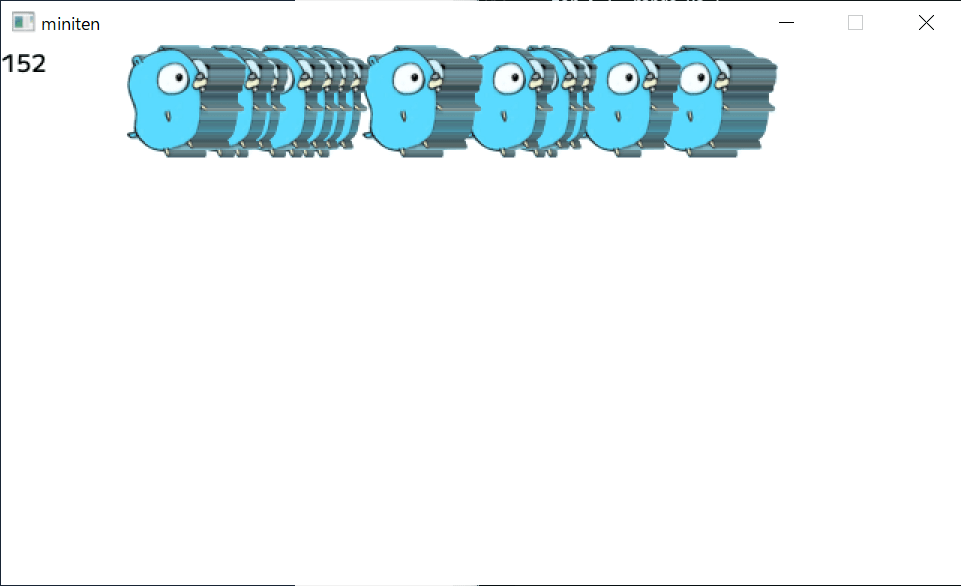

第十一章 加快动作（切片与循环）
上次我们学习了如何让角色自然地移动。然而，游戏中除了玩家角色，还需要许多敌人和物体。因此，我们需要一种管理多个对象的方法。
11.1 数组
当我想移动很多东西时
var x0 int
var x1 int
var x2 int
写很多变量很麻烦。几个变量还好，几千、几万个，手动写下来就不太可能了。这时一般使用数组/array……
但在 Go 中更常用的是切片/slice，不过为了方便说明，我先从数组开始讲解。
数组是将任意数量的相同类型的变量排列在一起的结构。数组的每一个变量称为元素/element。数组的类型以 [长度]元素类型 的形式声明。例如
var xs [3]int
如果这样写，就像刚才写的 x0 x1 x2 一样，程序中会造出来三个放在一起的 int。
配列和切片，这种拥有多个相同元素的变量，英文名的后缀，通常会加上表示英语复数形式的 s 和 es 。比如 xs 是 x 的复数形式。
配列也可以在声明的同时赋值。表示数组的值，可以使用合成字面量/composite literal，以 类型名称{值, 值, ...} 的形式书写。
var xs = [3]int{0, 100, 200}
// 上面的写法，与下面作用一样
var x0 = 0
var x1 = 100
var x2 = 200
配列的魅力，无疑在于索引/index。索引是元素编号、是从 0 开始的数字。这样，您可以通过 变量名[索引] 来访问每个元素。
func main() {
xs := [3]int{0, 100, 200}
fmt.Println(xs[0]) // 索引为 0 的元素，存储的数字是 0
fmt.Println(xs[1]) // 索引为 1 的元素，存储的数字是 100
}
索引是数字，因此可以写算式，也可以使用变量。连续定义多个变量，就没有这种方便的功能了。
func main() {
xs := [3]int{0, 100, 200}
index := 1
xs[index] = 99 // 用变量当索引
fmt.Println(xs) // [0 99 200]
}
请注意，如果索引超过数组的长度或为负数，程序会崩溃，因此请小心。
func main() {
xs := [3]int{0, 100, 200}
fmt.Println(xs[3]) // 程序崩溃
fmt.Println(xs[-1]) // 程序崩溃
}
11.2 for range循环的另一种用法
配列和切片与 for range 语句结合使用时会更方便。
之前教的是“指定重复次数，并获取当前次数”的 for range 语句。
这次新学的是“顺序提取数组或切片的元素”的 for range 语句。
func main() {
xs := [3]int{0, 100, 200}
for i, v := range xs {
fmt.Println(i, v)
}
}
$ go run .
0 0
1 100
2 200
这个语法与指定回数的 for range 非常相似，但重复的次数是数组元素的数量，并且可以与循环次数 i 一起提取对应的元素 v 。这种类型的 for 语句非常常用。
如果不需要回数，只想提取元素，可以使用特殊的空白变量 _ 来明确表示不用并丢弃这个参数。
在 Go 中，如果定义了却没有使用某个变量，会导致程序报错，因此需要记住这一点。
func main() {
xs := [3]int{0, 100, 200}
for _, v := range xs {
fmt.Println(v)
}
}
相反，如果只想提取次数，则只需使用一个变量来接收。
语法上就是这么规定的，习惯并记住就好。
func main() {
xs := [3]int{0, 100, 200}
for i := range xs { // 这里没有定义 v，只接收循环次数
fmt.Println(i)
}
}
移动多个箱子
接下来，我们结合数组和 for，试着移动多个箱子。
package main
import "github.com/eihigh/miniten"
var xs = [3]int{0, 100, 200} // 箱子的初始位置
func main() {
miniten.Run(draw)
}
func draw() {
for i := range xs { // 重复三次
xs[i] += 1 // 向右移动箱子
}
for _, x := range xs { // 重复三次
miniten.DrawRect(x, 0, 50, 50) // 描绘箱子
}
}
这个程序将显示三个逐渐向右移动的箱子。
需要注意的地方可能是 xs[i] += 1 。以下的写法是错的。
func draw() {
for _, x := range xs {
x += 1
}
for _, x := range xs {
miniten.DrawRect(x, 0, 50, 50)
}
}
for _, x := range xs 取出的 x 是元素克隆后的副本，因此即使对副本加上 x += 1 ，也不会影响原始数组 xs 。需要以 xs[i] += 1 的形式对原始数组进行赋值。这有点难，所以在今后巩固 Go 的基础时，逐渐理解就可以了。
11.3 切片
配列的类型 [长度] 部分是类型的一部分，此数字相当特殊，不能在这里使用变量。
var length = 3
var xs = [length]int{0, 100, 200} // できない
此外，数组的长度是固定的，无法在后期扩展。实际上，Go 的数组并不是为了日常使用而设计的，大多数情况下，使用的是可以在后期扩展长度的切片/slice。
切片以 []元素类型 的形式书写。其他部分基本与数组相同。
用切片重写刚才移动箱子的程序，可以看出，除了类型外完全相同，能够正常运行。
package main
import "github.com/eihigh/miniten"
var xs = []int{0, 100, 200} // 把[3] 替换成 [] ，这里用的就不是数组，而是是切片了
func main() {
miniten.Run(draw)
}
func draw() {
for i := range xs {
xs[i] += 1
}
for _, x := range xs {
miniten.DrawRect(x, 0, 50, 50)
}
}
append 函数
之前说的内容中提到，切片与数组不同，声明以后可以继续添加元素。使用 append 函数，可以在切片的末尾添加元素。
func main() {
xs := []int{} // 做一个空切片
xs = append(xs, 10) // 添加一个元素
xs = append(xs, 20, 30) // 添加多个个元素
fmt.Println(xs) // [10 20 30]
}
注意点是， append 函数会返回一个新的切片作为返回值，因此需要将其赋值给原始切片。
xs = append(xs, 0) // OK
append(xs, 0) // NG（不会改变原始切片的值）
len 函数
当您想知道该切片的当前长度时，可以使用 len 函数。
func main() {
xs := []int{0, 100, 200}
fmt.Println(len(xs)) // 3
xs = append(xs, 300)
fmt.Println(len(xs)) // 4
}
玩玩看
该程序在点击期间添加 gopher。
package main
import "github.com/eihigh/miniten"
var xs = []int{} // 初始状态下是空的，一个也没有
func main() {
miniten.Run(draw)
}
func draw() {
if miniten.IsClicked() {
xs = append(xs, 0) // 每点击一次，就加一只地鼠
}
for i := range xs { // 循环“地鼠的数量”回
xs[i] += 1
}
for _, x := range xs { // 循环“地鼠的数量”回
miniten.DrawImage("gopher.png", x, 0)
}
miniten.Println(len(xs)) // 显示有几只地鼠
}
 gopher大増殖
slices 包
追加以外，在 slices 包里面还有删除和排序等功能。虽然这是 go 的官方标准包，但意外地不为人知。在这里知道了这件事，就能凭知识与他人拉开差距。
[面向有经验的人] 切片与数组的关系
切片的实体顾名思义，就是像切片奶酪一样，切割出来的数组的一部分或全部。在索引部分写上 [开始:结束] ，可以切出数组或切片。开始和结束标志是可选的，省略时，分别表示开头和结尾。
a := [5]int{0, 1, 2, 3, 4}
s1 := a[:] // [0 1 2 3 4]
s2 := s1[:3] // [0 1 2]
s3 := s1[2:] // [2 3 4]
s4 := s1[1:4] // [1 2 3]
切片背后总是有一个数组。即使直接写 xs := []int{0, 1, 2} 来创建切片也是一样。背后会自动创建一个数组。
此外， append 函数在超出其背后数组的长度时，会重新创建一个更大的数组并复制元素。因此，如果知道切片的长度，使用 make 函数进行初始化，就可以避免切片的重新分配，从而提高程序运行速度。
// 虽然切片本体长度是0，但是后台因旱地创造了一个长度为100的数组
xs := make([]int, 0, 100)
后台数组的大小可以通过 cap 函数获取。观察 append 如何改变 cap 会很有趣。
func main() {
xs := []int{}
for range 100 {
xs = append(xs, 0)
fmt.Println(len(xs), cap(xs))
}
}
$ go run .
1 1
2 2
3 4
4 4
5 8
6 8
...中略...
97 128
98 128
99 128
100 128
在这一点上，几乎可以不必太在意，单纯地认为“切片很方便”使用也没有问题，但如果能够正确使用 make 函数，Go 的性能问题大约有 80% 可以解决（主观感想），所以掌握你会变得更强。
本章总结
这次内容很丰富，我们来总结一下好好复习吧。
- 切片将多个元素排列在一起。与数组不同，切片可以在后面添加元素
- 声明切片的语法，是
[]元素类型 - 可以写为
[]元素类型{元素, 元素, ...}的形式 - 取出元素的语法是 变量名[索引]`
- 使用
for 回数, 元素 := range 切片 { ... }这个语法，可以顺序提取切片的元素 append函数可以给切片添加元素len函数可以获取切片的长度- 可以使用 slices 包进行其他切片操作